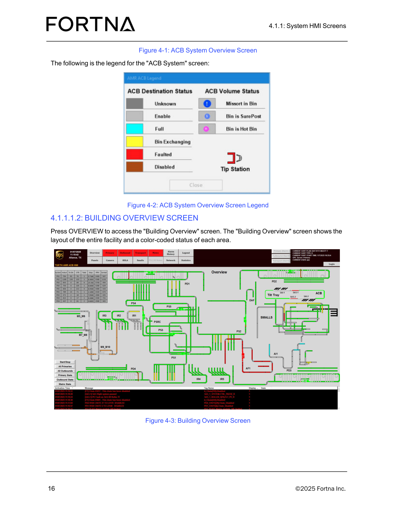

| Procedure ID | proc_access_the_building_overview_screen_and_view_area_status_v1 |
|---|---|
| Title | Access the Building Overview Screen and View Area Status |
| Procedure Type | operation |
| Primary Role | operator |
| Support Safe | Yes |
| Validation Status | needs_sme_review |
| Merge Status | source_finalized |
Open the Building Overview HMI screen by pressing OVERVIEW, then use the screen to view the layout of the entire facility and the color-coded status of each area.
Use this procedure when an operator needs to access the Building Overview HMI screen to view the facility-wide layout and observe the color-coded status shown for each area.
Responsible role: operator
Instruction:
From the HMI, press OVERVIEW to access the "Building Overview" screen.
Expected result:
The system opens the Building Overview screen.
Screens / Images:

Stop or Escalate If:
Responsible role: operator
Instruction:
Confirm that the "Building Overview" screen is displayed.
Expected result:
The displayed screen is the Building Overview screen.
Screens / Images:
Stop or Escalate If:
Responsible role: operator
Instruction:
View the layout of the entire facility shown on the screen.
Expected result:
The operator can see the facility-wide layout on the Building Overview screen.
Screens / Images:
Stop or Escalate If:
Responsible role: operator
Instruction:
Observe the color-coded status shown for each area on the screen.
Expected result:
The operator can see a color-coded status for each area on the Building Overview screen.
Screens / Images:
Stop or Escalate If: